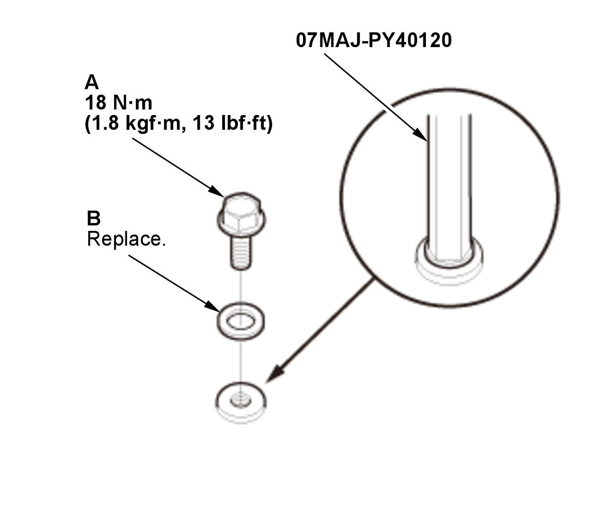
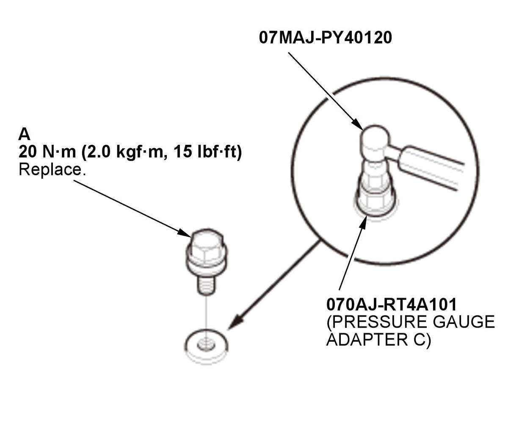
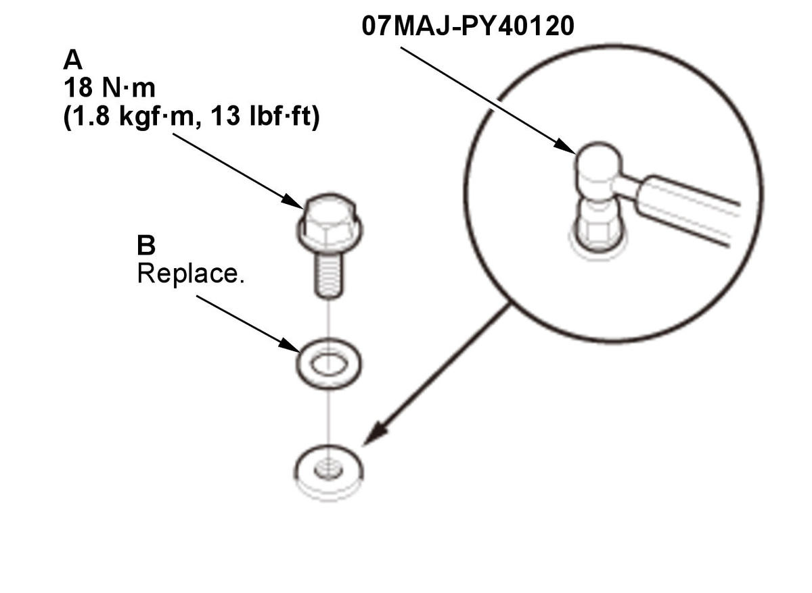

CVT Pressure Test (K20C2 (CVT)): Test
NOTE:
- Check for DTCs. If any DTCs are stored, troubleshoot and clear them first.
- Do not allow dust or other foreign particles to enter the port while installing the A/T oil pressure gauge.
- Be sure to check the transmission fluid level after each pressure test. When installing or removing the A/T oil pressure gauge, transmission fluid may run out of the inspection ports.
- Do not test pressure for more than 10 seconds at a time.
- Do not move the shift lever while raising the engine speed.
- Disable the VSA by pressing the VSA OFF button.
- VSA DTC(s) may come on during the test-drive. If the VSA DTC(s) come on, clear the DTC(s) after testing is done with the HDS.
- Vehicle - Lift
- Engine Undercover - Remove
- Engine Undercover Lid - Remove
- Transmission Fluid Level - Check
- Forward Clutch Pressure - Test
1. Assemble the pressure gauge; install the 2210 mm A/T pressure hose and the A/T pressure adapter to the A/T oil pressure gauge set. 2. Remove the sealing bolt (A) with the sealing washer (B).
Fig 1: Forward Clutch Pressure Inspection Port Sealing Bolt And Sealing Washer With Torque Specifications (K20C2 - CVT)
Courtesy of HONDA, U.S.A., INC.3. Install the pressure gauge to the forward clutch pressure inspection port.
4. Start the engine, and warm it up to normal operating temperature (the radiator fan comes on twice).
5. Shift the transmission to D position/mode.
6. Measure the forward clutch pressure at the engine idling while firmly pressing the brake pedal.
Pressure Standard Forward clutch 390-880 kPa (3.98-8.97 kgf/cm2 , 56.6-127.6 psi) 7. Turn the engine off.
8. If the forward clutch pressure is out of the standard, refer to the problem and probable causes listed in the table.
Problem Probable causes No or low forward clutch pressure - Transmission fluid pump defective
- Valve body assembly defective
- CVT clutch pressure control solenoid valve defective
- Forward clutch defective
9. Remove the pressure gauge.
10. Install the sealing bolt with a new sealing washer to the forward clutch pressure inspection port.
- Reverse Brake Pressure - Test
1. Assemble the pressure gauge; install the 2210 mm A/T pressure hose, the A/T pressure adapter, and pressure gauge adapter C to the A/T oil pressure gauge set.
NOTE: Pressure gauge adapter C is a component of the pressure gauge adapter (070AJ-RT4A101).2. Remove the sealing bolt (A).
Fig 2: Reverse Brake Pressure Inspection Components, Port Sealing Bolt And Sealing Washer With Torque Specifications (K20C2 - CVT)
Courtesy of HONDA, U.S.A., INC.3. Install the pressure gauge to the reverse brake pressure inspection port.
4. Start the engine, and warm it up to normal operating temperature (the radiator fan comes on twice).
5. Shift the transmission to R position/mode.
6. Measure the reverse brake pressure at engine idling while firmly pressing the brake pedal.
Pressure Standard Reverse brake 390-880 kPa (3.98-8.97 kgf/cm2 , 56.6-127.6 psi) 7. Turn the engine off.
8. If the reverse brake pressure is out of the standard, refer to the problem and probable causes listed in the table.
Problem Probable causes No or low reverse brake pressure - Transmission fluid pump defective
- Valve body assembly defective
- CVT clutch pressure control solenoid valve defective
- Reverse brake defective
9. Remove the pressure gauge.
10. Install a new sealing bolt to the reverse brake pressure inspection port.
- Drive Pulley Pressure - Test
1. Assemble the pressure gauge; install the 2210 mm A/T pressure hose and the A/T pressure adapter to the A/T oil pressure gauge set. 2. Remove the sealing bolt (A) with the sealing washer (B).
Fig 3: Drive Pulley Pressure Inspection Components, Port Sealing Bolt And Sealing Washer With Torque Specifications (K20C2 - CVT) Courtesy of HONDA, U.S.A., INC.
Courtesy of HONDA, U.S.A., INC.3. Install the pressure gauge to the drive pulley pressure inspection port.
4. Start the engine, and warm it up to normal operating temperature (the radiator fan comes on twice).
5. Shift the transmission to N position/mode.
6. Measure the drive pulley pressure at engine idling while firmly pressing the brake pedal.
Pressure Standard Drive pulley 590-1140 kPa (6.02-11.62 kgf/cm2 , 85.6-165.3 psi) 7. Turn the engine off.
8. If the drive pulley pressure is out of the standard, refer to the problems and probable causes listed in the table.
Problems Probable causes No or low drive pulley pressure - Transmission fluid pump defective
- Valve body assembly defective
- CVT drive pulley pressure control solenoid valve defective
Drive pulley pressure too high - Valve body assembly defective
- CVT drive pulley pressure control solenoid valve defective
9. Remove the pressure gauge.
10. Install the sealing bolt with a new sealing washer to the drive pulley pressure inspection port.
- Driven Pulley Pressure - Test
NOTE: - Driven pulley pressure may be above 3308 kPa (33.73 kgf/cm2 , 479.8 psi) when there is a transmission problem that causes the TCM to go into fail-safe mode.
- When troubleshooting, you must use the A/T high pressure gauge to measure driven pulley pressure.
1. Assemble the pressure gauge; install the A/T pressure adapter to the A/T high pressure gauge.
2. Remove the sealing bolt (A) with the sealing washer (B).
Fig 4: Driven Pulley Pressure Inspection Components, Port Sealing Bolt And Sealing Washer With Torque Specifications (K20C2 - CVT)
Courtesy of HONDA, U.S.A., INC.3. Install the pressure gauge to the driven pulley pressure inspection port.
4. Start the engine, and warm it up to normal operating temperature (the radiator fan comes on twice).
5. Shift the transmission to N position/mode.
6. Measure the driven pulley pressure at engine idling while firmly pressing the brake pedal.
Pressure Standard Driven pulley 850-1400 kPa (8.67- 14.28 kgf/cm2 , 123.3-203.1 psi) 7. Turn the engine off.
8. If the driven pulley pressure is out of the standard, refer to the problems and probable causes listed in the table.
Problems Probable causes No or low driven pulley pressure - Transmission fluid pump defective
- Valve body assembly defective
- CVT driven pulley pressure control solenoid valve defective
Driven pulley pressure too high - Valve body assembly defective
- CVT driven pulley pressure control solenoid valve defective
9. Remove the pressure gauge.
10. Install the sealing bolt with a new sealing washer to the driven pulley pressure inspection port.
- Transmission Fluid Level - Check
- All Removed Parts - Install
1. Install the parts in the reverse order of removal.